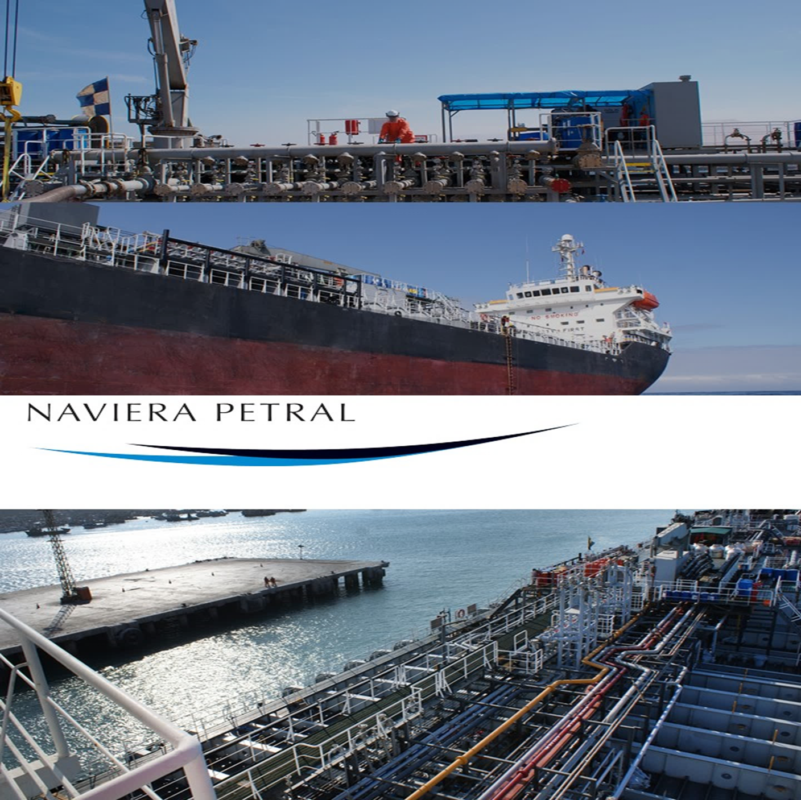
Brief
El presente documento analiza la atractividad de inversión de un terminal dedicado principalmente a la descarga, el almacenamiento y embarque de ácido sulfúrico.
PETRAL ha identificado la necesidad de ofrecer al mercado un terminal moderno, eficiente y seguro que le permita competir con ventaja sobre las opciones actuales.
A lo largo del presente análisis, se presentarán diversos supuestos relativos al modelo de negocio, inversiones necesarias, costos directos y gastos operativos, así como retornos adecuados para este tipo de inversión.
Finalmente, el análisis presentará diversos escenarios, los riesgos asociados a cada uno de ellos y brindará recomendaciones de inversión para cada uno de dichos escenarios.
Tabla de Contenido
2.4. Inversiones de capital (CAPEX)
3.1. Entendimiento de la evaluación a realizar
3.2. Aproximación práctica para la evaluación financiera
3.3. Descripción del escenario base
3.3.1. Supuestos comerciales y operativos
4. Variables económico financieras
4.1. Capital de trabajo y aspectos tributarios
4.3. Supuestos adicionales y escenarios de salida
4.4. Costo de Capital (Ke – No Apalancado)
5.4. Mark-Ups implícitos en las tarifas comerciales asumidas en el escenario base.
6. Conclusiones y recomendaciones
6.2.2. Activo estratégico que forma parte de un negocio en marcha
6.2.3. Opciones reales “cruzadas”
6.2.4. Visión de Kaizen Capital para un deal WIN WIN
Naviera PETRAL posee un amplio conocimiento de la cadena del suministro del ácido sulfúrico en el Perú. Su posición como principal actor del transporte marítimo de dicho producto, le ha permitido a lo largo de más de 4 décadas, acumular la experiencia necesaria para identificar correctamente oportunidades de negocios en otros eslabones de la cadena de suministro que considera desatendidos.
PETRAL estima que existe una gran oportunidad para desarrollar un terminal de almacenamiento para ácido sulfúrico en el puerto del Callao, aprovechando el suministro para exportación que recibe el puerto vía el Ferrocarril Central y potencialmente el flujo de producto importado que se almacena en terminal y es transportado luego en camiones. El presente documento, evalúa a detalle, la atractividad de dicha oportunidad de negocios y brinda una recomendación de inversión a PETRAL.
La presente versión del informe incorpora una actualización de supuestos y cifras clave (principalmente CAPEX y requerimientos de inversión). El objetivo se mantiene: evaluar la factibilidad económico-financiera del desarrollo del terminal bajo un enfoque conservador.
El proyecto consiste en la construcción de una estación de descarga desde coches tanque del ferrocarril central, tres tanques de almacenamiento de 18,600 toneladas en conjunto y un sistema de embarque dedicado en acero inoxidable.
El diseño actualizado mejora sustancialmente la seguridad y la eficiencia operativa. Aunque el CAPEX se ha revisado al alza por el mayor alcance (tres tanques), el proyecto sigue siendo atractivo por la mejora en confiabilidad y por la optimización de costos recurrentes y riesgos operativos frente a alternativas de múltiples tanques pequeños con descarga por aire comprimido.
Los ingresos provienen de i) dos tipos de tarifa sujetas a ajustes por indicadores a negociar con el cliente y ii) el volumen de producto despachado:
o Capacidad o Almacenaje: Pago por la capacidad del tanque que está a disposición del cliente. Su valor está en USD/TM. No se puede variar a lo largo del tiempo sin tener que hacer inversiones de capital.
o Despacho: Pago por las toneladas que se embarcan desde el tanque o hacia el tanque (importación o exportación de ácido sulfúrico). Su magnitud depende de las veces en que se vacía y/o llena el tanque.
o Turnover: Representa las veces que el tanque se carga y descarga en un mes. Depende del volumen comprometido de ingreso y la disponibilidad para retirar el producto a tiempo del tanque.
Los ingresos tienen entonces, dos componentes, uno fijo que proviene de la capacidad del tanque y uno variable que proviene de las toneladas embarcadas.
El hecho de que NEXA entregue el 100% del manejo de su volumen de ácido sulfúrico a un operador nuevo implica la necesidad de una homologación estricta y garantizar la disponibilidad de una infraestructura adecuada y suficiente. Sobre todo, considerando que NEXA no tiene capacidad para almacenarlo más allá de la frecuencia con la que se cargan los coches tanques del ferrocarril central. En este sentido, el contar con tres tanques garantizará a NEXA la disponibilidad de la capacidad necesaria para absorber fluctuaciones logísticas. De otro lado, el contar con estos tres tanques proporciona la capacidad de potencialmente atender a clientes INBOUND.
Por ello debemos considerar la opcionalidad de contratación para cada tanque de la siguiente manera
o Tanques 1 y 2: Contratados exclusivamente para el NEXA OUTBOUND, bajo un contrato de 7 años con tarifas iniciales ajustables anualmente por inflación usando marcadores internacionales usuales. Su rotación en caso de ser los únicos dedicados al contrato sería de 2.4 veces al mes, mientras que en caso de requerirse los tres tanques la rotación sería de 1.6 veces al mes.
o Tanque 3: Dedicado a atender a NEXA en caso de menor rotación OUTBOUND.
El Terminal B-TANK tiene como objetivo principal la recepción de ácido sulfúrico desde vagones, su almacenamiento en tres tanques y el embarque posterior en buques de 15,000 TM. Esto implica la construcción de:
o Una estación de descarga de vagones.
o Tres tanques de almacenamiento de gran capacidad (6,200 toneladas o 3,400 m³ cada uno).
o Un sistema de embarque con tubería y bombas inoxidables.
Cuadro 1: Desglose de la Inversión (CAPEX en USD sin IGV)
|
Componente |
Monto (USD) |
% del Total |
|
Tanque de Almacenamiento de Ácido Sulfúrico |
7,096,450 |
50.33% |
|
Transferencia de ácido (tanque a buque) |
3,537,980 |
25.09% |
|
Descarga de vagones y transferencia |
957,000 |
6.79% |
|
Sistema eléctrico |
615,900 |
4.37% |
|
Descarga de Camiones y transferencia |
566,400 |
4.02% |
|
Edificaciones |
481,250 |
3.41% |
|
Control y monitoreo |
416,150 |
2.95% |
|
Equipos |
230,000 |
1.63% |
|
Diseños y estudios |
200,000 |
1.42% |
|
Amarradero Multiboyas |
0 |
0.00% |
|
Total |
14,101,130 |
100% |
El costo de venta contempla todos aquellos costos que son considerados están involucrados directamente en la producción del servicio ofrecido por B-TANK.
Cuadro 2: Desglose de COGS (Mensual)
|
Componente |
Monto (USD) |
% del Total |
|
Personal Operativo (fijo y volante) |
19,597 |
68.31% |
|
Energía Eléctrica |
5,359 |
18.68% |
|
Mantenimiento y EPP |
3,733 |
13.01% |
|
Total |
28,689 |
100% |
El gasto operativo involucra todos los gastos que son necesarios para la operación pero no forman parte del costo directo.
Cuadro 3: Desglose de Gastos Operativos (OPEX Mensual)
|
Componente |
Monto (USD) |
% del Total |
|
Alquiler de Terreno |
37,500 |
43.85% |
|
Póliza de Seguros |
28,000 |
32.74% |
|
Personal No-Operativo |
8,060 |
9.43% |
|
Contabilidad externa |
4,478 |
5.24% |
|
Seguridad Policial 24/7 |
2,597 |
3.04% |
|
Provisión para emergencias |
2,000 |
2.34% |
|
Comunicación e Internet |
1,400 |
1.64% |
|
Material de oficina y otros |
1,000 |
1.17% |
|
Impuestos Municipales |
475 |
0.56% |
|
Total |
85,509 |
100% |
PETRAL está interesado en desarrollar el proyecto B-TANK en un activo propiedad de BARCINO, empresa que opera un terminal de líquidos. Dicho activo tiene ventajas significativas como acceso a las líneas del Ferrocarril Central, tuberías autorizadas por APMT, entre otros.
PETRAL busca asociarse con BARCINO a través de un JV que le permita utilizar el activo y volcar toda su experiencia en ácido sulfúrico a la operación del nuevo terminal. PETRAL tiene la capacidad de atraer a los principales jugadores en el mercado de ácido sulfúrico con los que ya tiene relaciones comerciales como armador naviero altamente especializado en ácido sulfúrico.
Valorizar el proyecto B-TANK debería seguir la siguiente metodología:
o Valorizar a BARCINO (hoy): Determinar el valor actual de la empresa en su estado operativo presente.
o Valorizar BARCINO más el proyecto B-TANK que propone PETRAL: Proyectar nuevas fuentes de ingresos, sinergias y valorizar la empresa combinada incorporando el nuevo proyecto que trae PETRAL.
o Calcular el Valor Creado: La diferencia entre ambas valorizaciones representa el valor total que el proyecto conjunto trae a la mesa.
Gráfico 1: Valuation waterfall
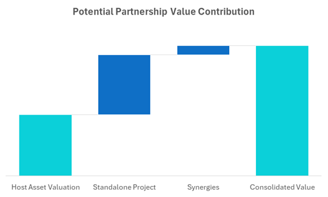
Después de ejecutar el método descrito líneas arriba, es natural preguntarse: ¿El valor creado es 100% atribuible a PETRAL y B-TANK?. BARCINO argumentaría que su aporte es:
o Activo Estratégico: El proyecto no se puede realizar en Callao sin BARCINO, ya que es un activo clave para la operación.
o Economías de Alcance: BARCINO viene operando como terminal de almacenamiento de líquidos por décadas. Algunos de los servicios de soporte que atienden actualmente a su operación podrían eventualmente ser compartidos con la operación del proyecto B-TANK.
Sin embargo, realizar la valorización según los términos descritos, es por ahora imposible pues no contamos con la información financiera completa de BARCINO. Posteriormente a ejecutar dicha valorización, se deberá definir qué porción del valor creado corresponde a cada parte. De llegarse a abrir la negociación para un posible JV, ambas partes tendrían que nombrar a su equipo de asesores (principalmente financieros y legales) que en conjunto y vía negociación encuentren una respuesta a la interrogante arriba planteada.
Dado el desafío anterior, es necesario usar una aproximación para simular el proyecto "en el vientre de BARCINO" mientras avanzan las negociaciones y se logra obtener la información necesaria para ejecutar el método de valorización descrito anteriormente.
Aunque BARCINO ha descartado un modelo de alquiler de sus instalaciones, el análisis asume que PETRAL "alquila" la tierra a su propietario. El monto del alquiler está basado en valor de transacción de activos similares en la zona donde se ubica el activo en cuestión y aplica un CAP RATE típico de instalaciones logísticas e industriales.
Esta aproximación nos permite realizar una evaluación inicial que incluye todos los costos asociados a una operación real: CAPEX, COGS, OPEX y uso de la tierra a través de alquiler.
La inversión está orientada a atender las necesidades logísticas de NEXA (contrato principal); sin embargo, diseñando una operación adecuada para mantener el nivel de servicio a NEXA en dos tanques, es viable destinar uno de los tres tanques para atender a otros clientes, aprovechando las ventajas geográficas y de conectividad del terminal. En ese caso, sin embargo como el producto a almacenarse en los tanques será sólo ácido sulfúrico, en concentraciones iguales o ligeramente mayores a las del producto de NEXA. La evaluación se realiza en términos de proyecto y de accionista, empleando flujos descontados en dólares, y todos los valores mencionados son aproximaciones extraídas del modelo financiero base. El caso base excluye upsides no contratados y prioriza supuestos verificables para evaluar factibilidad y bancabilidad.
o Tanques 1 a 3 – contrato con NEXA (Outbound). Se asume un contrato inicial de 7 años, renovable por otros 7 años. La estructura tarifaria contempla un cargo de manipuleo (throughput) de USD 6.00 por TM y un cargo de almacenaje de USD 16.00 por TM. Estas tarifas representan un descuento de entre 20% y 25% respecto de los valores de mercado investigados. Se prevé el aprovechamiento completo de la capacidad de 6 200 TM con una rotación de inventarios de 1.6 veces al mes, lo que se traduce en un throughput anual de 350 000 TM.
Volúmenes y rotación
Los volúmenes de manejo se modelan multiplicando la capacidad efectiva de cada tanque por la rotación mensual asumida, partiendo del supuesto de dedicación exclusiva a NEXA (OUTBOUND). En el escenario base la rotación se mantiene en 1.6 veces/mes para cada tanque. El producto tiene un peso específico de 1.84 TM/m³, lo que permite convertir m³ en toneladas. Cabe aclarar aca que esta rotación supone que los 3 tanques se dedican solo a NEXA.
El capital de trabajo se calcula suponiendo 15 días de cuentas por cobrar y 30 días de cuentas por pagar. Las cuentas por cobrar representan el 100 % de los ingresos, mientras que las cuentas por pagar equivalen al 60 % del costo de servicio. Asimismo, forman parte de los requerimientos de capital de trabajo el IGV durante la etapa de construcción. El modelo aplica el régimen tributario peruano con tasas marginales de 29.5% de impuesto a la renta y 18% de IGV.
El requerimiento total de capital asciende a USD 16.6 millones, compuesto por USD 14.1 millones de CAPEX, USD 2.5 millones de capital de trabajo (incluido el IGV de la construcción) y unos USD 27 mil de servicio de deuda durante la construcción. La estructura de financiamiento contempla:
o Aportes de capital (equity): USD 12.6 millones (aprox. 76 % de los requerimientos). Se mantuvo el supuesto de nivel de deuda inicial como postura conservadora; sin embargo, Kaizen Capital considera que con una estructuración más fina, en conjunto con la banca, se podría financiar con deuda, conservadoramente, 40% de los requerimientos.
o Deuda senior: USD 4,0 millones, desembolsada en mayo de 2026, con tasa de interés de 8.0 % anual, comisión total (all‑in fees) de 4.0 %, plazo total de 12 años, pagos trimestrales y dos períodos de gracia para la amortización del principal.
o Contribución operativa inicial: alrededor de USD 8.0 mil generados durante los primeros meses de operación.
El esquema financiero se proyecta en dólares y no considera coberturas cambiarias.
Para la valoración final se utiliza un múltiplo de salida equivalente a una perpetuidad descontada en un 50 %; esta penalización pretende evitar que el valor terminal distorsione los retornos en escenarios de corto plazo. También se asume que los contratos se renuevan o reemplazan al término de cada periodo, sin costes adicionales significativos.
A fin de tener una referencia de retorno para el proyecto y evaluar su viabilidad económica, se calcula una tasa de descuento de flujos sin apalancamiento, basándonos en la metodología CAPM modificada. Se ha calculado un costo patrimonial no apalancado (Ke) que cumple el rol de tasa de descuento. La ecuación para obtener este valor:
o : Tasa libre de riesgo (bono del Tesoro EE.UU. a 10 años): 4.9%
o : Prima de riesgo de mercado de EEUU = 5.0%
o : Beta desapalancado (peer group = Transporte) = 0.83
o : Prima de riesgo país (Perú) = 1.9%
o DI: Descuento por inflación estructural de largo plazo = 0.0%
o SP: Prima por tamaño y liquidez (empresa privada mediana) = 2.5%
|
Unlevered Cost of Capital Calculation - Peru |
% |
|
|
Risk Free Rate (RfUS) - US 30-year Treasury Bond ~ YTM |
4.9% |
|
|
Country Risk Premium (CRP) - Average |
1.9% |
|
|
Unlevered Beta |
0.83 |
|
|
Market Risk Premium US (RmUS) - Average |
5.0% |
|
|
Real Rate Adjustment (Inflation) |
0.0% |
|
|
Size Premium |
2.5% |
|
|
Currency Risk Premium |
0.0% |
|
|
K_𝑐𝑒 CAPM |
13.3% |
|
El valor terminal se calcula aplicando la fórmula de perpetuidad de Gordon-Shapiro sobre el Flujo de Caja Libre para la Firma (FCFF) normalizado del año de vencimiento del contrato principal:
o FCFF: según proyección en modelo financiero
o Tasa de crecimiento a perpetuidad (g): 0% a fin de tomar un punto conservador
o : 13.3%
o Ajuste por vencimiento de contrato: 50%
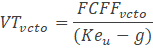
El siguiente gráfico resume los ingresos provenientes por almacenaje y por embarque.
Gráfico 2: Revenues by Service
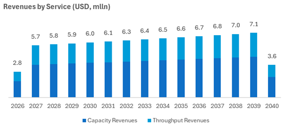
Asimismo, el siguiente gráfico resume los ingresos provenientes por cada tanque basado en el escenario base descrito anteriormente.
El siguiente gráfico muestra la evolución del resultado y margen bruto:
Gráfico 3: Gross Result & Gross Margin
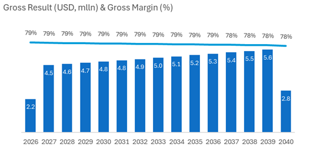
El siguiente gráfico muestra la evolución del resultado y margen EBITDA, resalta la elevada capacidad de generación de caja del proyecto, relativa a la inversión:
Gráfico 4: EBITDA & EBITDA Margin
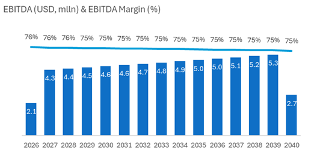
El siguiente gráfico muestra la evolución del resultado y margen neto, destacando la velocidad para alcanzar rentabilidad:
Gráfico 5: Net Result & Net Margin
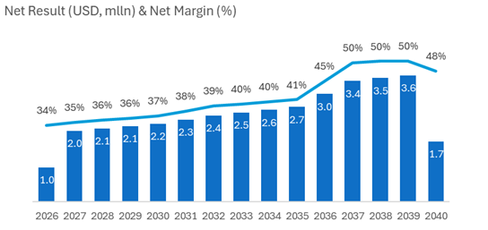
Los resultados financieros del modelo base indican una operación sólida con una rápida recuperación de la inversión:
Cuadro 4: Indicadores Clave de Rentabilidad
|
Variables Monetarias |
Monto (USD) |
|
|
Ventas Promedio Estables (Anualizado) |
5.8 |
millones |
|
Valor Presente Neto (VPN) |
11.6 |
millones |
|
Indicadores Clave |
Valor |
|
|
Tasa Interna de Retorno del Proyecto |
27% |
|
|
Tasa Interna de Retorno para Accionistas |
33% |
|
|
Retorno sobre Inversion (ROI) - Proyecto |
3.2 |
veces |
|
Retorno sobre Inversion (ROI) - Accionista |
4.2 |
veces |
|
Periodo de Recuperación - Proyecto |
4.6 |
años |
|
Periodo de Recuperación - Accionista |
3.8 |
años |
Estas cifras muestran un proyecto robusto con retornos atractivos. Es importante destacar que la estructura de costos fijos hace que el volumen y la rotación sean palancas clave: reducciones en el throughput tienen un impacto significativo en la rentabilidad. Asimismo, el apalancamiento moderado (deuda/capital inferior a 1.0 x) proporciona resiliencia frente a posibles fluctuaciones de mercado.
El escenario base asume dos tarifas para el contrato NEXA que son entre 20% y 25% menores a las obtenidas en base a inteligencia comercial:
o Cargo de despacho (throughput) de USD 6.00 / TM
o Cargo de almacenaje de USD 16.00 / TM
Nuestro modelo financiero se ha estructurado de manera que los costos puedan reflejar la metodología ABC. Dicho de otra manera, hemos segregado los costos asociados tanto al DESPACHO como al ALMACENAJE.
La mencionada segregación nos permite calcular el MARK UP y el margen bruto sobre los costos directos que se aplican implícitamente en las tarifas asumidas.
A continuación, presentamos los resultados de dicho análisis para las tarifas asumidas para el escenario base.
Gráfico 6: Storage Fee Components & Mark up
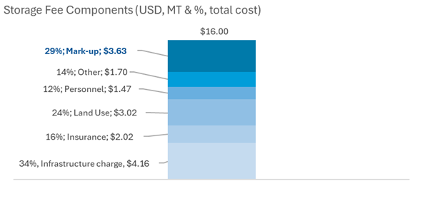
Gráfico 7: Handling Fee Components & Mark up
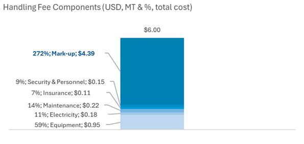
Como se puede apreciar, los mark-ups implícitos sugieren holgura para absorber desviaciones razonables de costos y sostener una estructura tarifaria defendible, sujeto a negociación y condiciones del contrato ancla.
Asimismo, de utilizarse las tarifas obtenidas en base a inteligencia comercial, los mark-ups para el cargo de despacho y almacenaje se incrementarían a 396% y 62%, respectivamente.
Se analizó la sensibilidad del proyecto a variaciones de 10% en las variables clave tradicionales de un proyecto de infraestructura. La mayor sensibilidad de los retornos a nivel de proyecto se produce como es natural en proyectos de infraestructura, por posibles variaciones en el CAPEX con la menor sensibilidad observándose para cambios en el OPEX:
Gráfico 8: Tornado chart
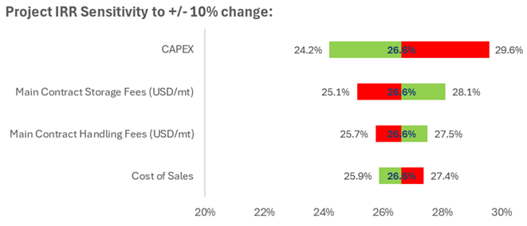
Como se observa en el gráfico, y en orden de sensibilidad:
o CAPEX: Incrementos del 10% en el mismo reducen la TIR proyecto en 2.4%, mientras que ahorros de 10% la incrementan en 3.0%
o Tarifas de Almacenaje: Incrementos del 10% aumentan la TIR proyecto en 1.5%, mientras que reducciones de 10% la reducen en 1.5%
o Tarifas de Despacho: Incrementos del 10% aumentan la TIR proyecto en 0.9%, mientras que reducciones de 10% la reducen en 0.9%
o OPEX: Incrementos del 10% en el mismo reducen la TIR proyecto en 0.7%, mientras que ahorros de 10% la incrementan en 0.7%
o Compensación por Uso del Activo: De reducirse a la mitad la compensación por el uso del activo la TIR proyecto aumenta en 1.4%
o El análisis integrando los supuestos técnicos, comerciales y financieros en el Escenario Base muestra un proyecto con alto potencial de rentabilidad y un horizonte de recuperación corto si se compara con la vida de los activos. El acuerdo con un cliente ancla, combinado con la posibilidad de expandirse mediante el segundo tanque, asegura una base de ingresos recurrentes.
o Los retornos están fuertemente ligados a la rotación de inventario y a las tarifas negociadas, de modo que cualquier plan de negocio debe contemplar contratos firmes y mecanismos de ajuste inflacionario.
o La estructura de deuda moderada y la cobertura elevada brindan flexibilidad para soportar shocks y mantener la viabilidad del proyecto.
o Dado el nivel de los mark-ups, es justo anticipar que la alternativa actual respondería con descuentos para nivelarse con la oferta de B-TANK. La negociación con NEXA debe ser manejada colaborativamente, brindado una opción más económica y a la vez un seguro contra el riesgo operativo.
Si bien el objetivo del presente análisis es ofrecer una respuesta sobre la atractividad del proyecto B-TANK, nos permitimos ofrecerles nuestra visión de las consideraciones relevantes para la arquitectura del potencial deal.
Es nuestra apreciación que ambas partes buscarían estar niveladas en su participación en un potencial JV. Resulta poco probable que una parte obtenga una porción controladora en una futura negociación.
Con la información recabada a lo largo del presenta análisis, resulta poco probable encontrar una alternativa al activo que BARCINO posee. Como describimos líneas arriba, hemos simulado una empresa “Stand Alone” que alquila dicho activo. En una potencial negociación, BARCINO incluirá sobre el valor de transacción de su activo (será un reto encontrar un valor de transacción de un activo similar a precios actuales), diversos intangibles como sus permisos, sus “ancillary facilities”, y un largo etcétera. Solo a través de una negociación colaborativa se podrá definir dichos intangibles.
Una opción real en finanzas es el derecho, pero no la obligación, de tomar una decisión sobre un proyecto de inversión en el futuro, como expandirlo, reducirlo o abandonarlo, dependiendo de cómo se desarrollen las condiciones del mercado. A diferencia de las opciones financieras, las opciones reales se aplican a activos no financieros (aplican a activos que tienen “realidad” física de allí el nombre “real options”) y ayudan a valorar proyectos considerando la flexibilidad estratégica ante la incertidumbre, lo que permite tomar decisiones más realistas y adaptables.
Tipos comunes de opciones reales:
o Opciones de crecimiento/expansión: El derecho a ampliar un proyecto si las condiciones del mercado son favorables.
o Opciones de abandono/reducción: El derecho a terminar o reducir un proyecto si los resultados son desfavorables.
o Opciones de diferir: El derecho a posponer una inversión para esperar a que haya más claridad o mejores condiciones de mercado.
o Opciones de producción: La posibilidad de cambiar el tipo de bien o servicio que produce un activo en el futuro.
Ambas partes están en capacidad de ofrecer a la otra parte opciones reales que facilitarían la negociación pues incrementarían el valor de una potencial asociación:
o Opción de crecimiento/Expansión otorgada por BARCINO a PETRAL: El activo tiene la capacidad de construir más tanques si el negocio va bien. Indudablemente, si BARCINO otorga esa opción a PETRAL, el valor incremental seria mayor que el calculado para B-TANK
o Opciones de producción: PETRAL puede ofrecer a BARCINO cambiar el giro de negocio de sus servicios menos rentables a otros que pueda atraer comercialmente para los ACTIVOS YA EXISTENTES de BARCINO
Aunque no es parte del presente análisis, creemos valioso para PETRAL reflexionar sobre una potencial arquitectura de deal. Sugerimos evaluar el siguiente deal en dos etapas.
o Etapa I – El JV: En esta etapa BARCINO aporta del derecho de uso del activo y algunos intangibles producto de su experiencia en terminales, además de sinergias por mejor explotación de su overhead corporativo. El escenario más probable es que el equity se divida 50/50 por cuestiones de control como sustentamos líneas arriba. La discusión se centraría en asignarle un valor monetario al aporte del activo que incluya los intangibles que BARCINO trae al JV. La variable que le queda a PETRAL para inclinar la balanza es solicitar un aporte adicional de equity dependiendo de la negociación. La siguiente tabla de doble entrada describe como resultaría el retorno del equity para diversas combinaciones del valor del activo y el “cash equity” adicional que pediría PETRAL a BARCINO (o subsidio que otorgaría) para lograr el 50%. Esta etapa contempla que BARCINO otorgue la opción real a PETRAL para desarrollar negocios en conjunto expandiéndose a todo el activo disponible (pasar de 2 tanques a potencialmente 5 tanques). El análisis se efectuó a nivel proyecto y asumiendo no endeudamiento para liberar el resultado de los efectos “distorsionadores” de la deuda. Anticipamos que la percepción de BARCINO respecto al aporte del activo será que este entrará antes que el “cash equity” de PETRAL y que el mismo además pasará a ser parte de la garantía de cualquier financiamiento a obtenerse y/o por parte de los clientes.
Si damos por sentado que BARCINO no aceptaría menos que el 50% de las acciones del JV, podemos analizar el efecto de “subsidio” que PETRAL tendría que hacer para completar con un aporte de “cash equity” lo que falte para que su aporte sea igual al 50% del CAPEX TOTAL (Valor asignado a la tierra + CAPEX).
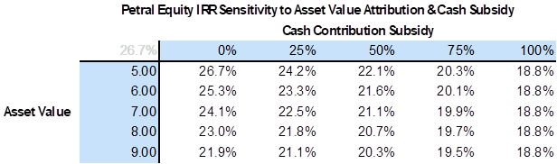
o Etapa II – La Fusión por absorción: Esta etapa es también una opción real que BARCINO otorgaría a PETRAL sujeta al logro de metas de generación de valor en el JV. Si dicha metas se alcanzaran, PETRAL tendría la opción de hacer un “swap” de sus acciones en el JV por acciones del BARCINO. El JV desaparecería, y PETRAL pasaría a ser accionista de BARCINO. El ratio de intercambio debería considerar el valor de la opción real que PETRAL otorgaría a BARCINO de hacer su negocio más rentable reconvirtiendo activos dedicados hoy a productos de menor valor.